atmosphere

The atmosphere of Mars consists of about 96% carbon dioxide, 1.93% argon and 1.89% nitrogen along with traces of oxygen and water. The atmosphere is quite dusty, giving the Martian sky a tawny color when seen from the surface. It may take on a pink hue due to iron oxide particles suspended in it.